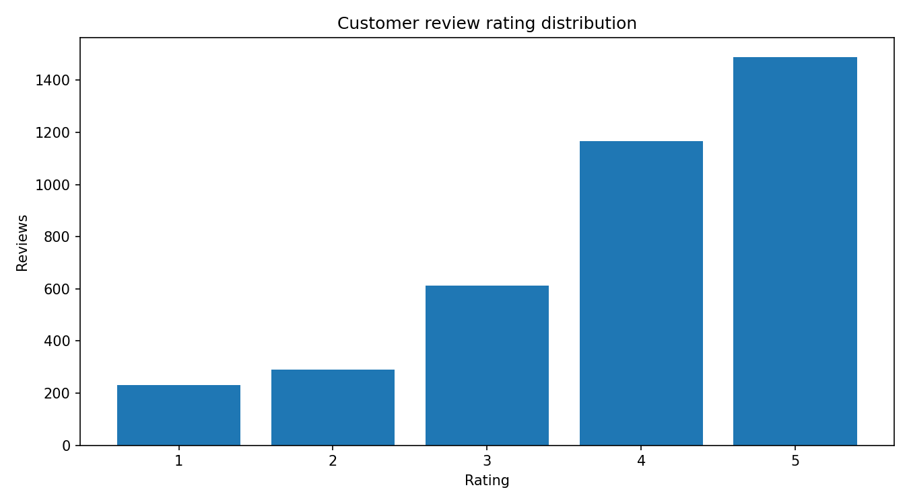
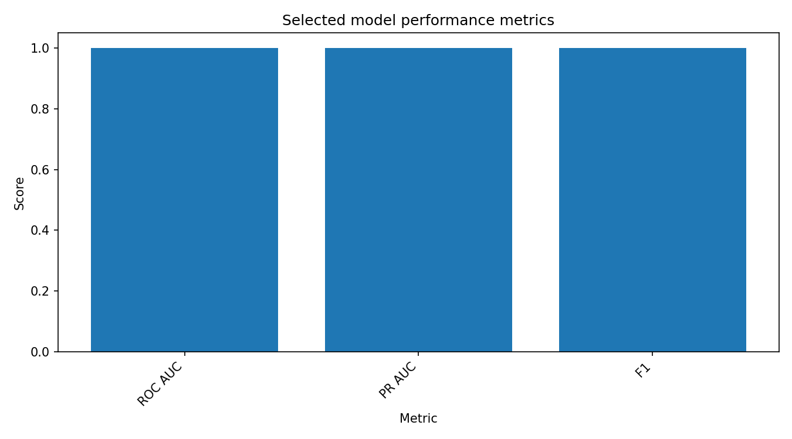

Project 13
Product Reviews and Customer Voice
Connect customer feedback with product and customer behaviour.
Workflow evidence
Notebook collection
All notebooks remain in the original project folders. Expand a stage to inspect the complete collection.
01 Business Problem · 1 notebooks
02 Data Audit · 4 notebooks
03 Data Cleaning · 8 notebooks
05 Feature Engineering · 4 notebooks
06 Business Eda · 1 notebooks
07 Feature Engineering Eda · 1 notebooks
08 Model · 1 notebooks
09 Business Conclusions · 1 notebooks
Data
CSV files
Source structure
Raw data, notebooks, outputs and model artifacts remain under the original project directory.
SELECTED VISUAL EVIDENCE
The evidence worth seeing first.
These visuals are selected for decision relevance. They are presentation views of the analytical work, with the reproducible notebook kept alongside the project.


MACHINE LEARNING
Model work is part of the project, not an appendix.
The modelling notebook, documented metrics and model artefacts are connected directly to this project. Performance is presented with the target definition and limitations rather than as a standalone score.
Open ML notebook